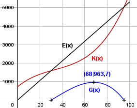

Aufgabe 103 Ein Hersteller arbeitet mit einer Kostenfunktion 3. Grades. Er hat Fixkosten von 720 €, durchschnittliche variable Kosten von 50 € bei einer produzierten Menge von 100 Stück, Grenzkosten von 48,03 € bei einem Stück und Durchschnittskosten für 20 Stück von 70 €. Sein Erlös beträgt 53 €/Stück. a) Bei welcher Menge liegt sein Betriebsminimum? b) Wie hoch ist sein maximaler Gewinn? a) K(x) = ax3 + bx2 + cx + d K'(x) = 3ax2 + 2bx + c K(x) ax3 + bx2 + cx + d k(x) = ------ = -------------------- x x d k(x) = ax2 + bx + c + ----- 720 Kv(x) ax3 + bx2 + cx kv(x) = ------ = ---------------- x x kv(x) = ax2 + bx + c K(0) = 720 --> d = 720 kv(100) = 50 a * 1002 + b * 100 + c = 50 10 000a + 100b + c = 50 (1) K'(1) = 48,03 3a + 2b + c = 48,03 (2) k(20) = 70 720 a * 202 + b * 20 + c + ----- = 70 20 400a + 20b + c = 34 (3) (2) * (-1) + (3) -3a - 2b - c = -48,03 400a + 20b + c = 34 ------------------------ 397a + 18b = -14,03 (4) (2) * (-1) + (1) -3a - 2b - c = -48,03 10 000a + 100b + c = 50 --------------------------- 9 997a + 98b = 1,97 (5) (4) * (-98) + (5) * 18 -38 906a - 1 764b = 1 374,94 179 946a + 1 764b = 35,46 ----------------------------- 141 040a = 1 410,4 |:141 040 a = 0,01 a in (4) eingesetzt: 397 * 0,01 + 18b = -14,03 3,97 + 18b = -14,03 |-3,97 18b = -18 :18 b = -1 a und b in (3) eingesetzt: 3 * 0,01 + 2 * (-1) + c = 48,03 - 2 + c = 48,03 |+1,97 c = 50 K(x) = 0,01x3 - x2 + 50x + 720 Betriebsminmum: kv(x) = 0,01x2 - x + 50 k'v(x) = 0,02x - 1 k''v(x) = 0,02 > 0 --> Tiefpunkt 0,02x - 1 = 0| +1 0,02x = 1 | :0,02 x = 50 ME b) G(x) = 53x - (0,01x3 - x2 + 50x + 720) G(x) = - 0,01x3 + x2 + 3x - 720 G'(x) = - 0,03x2 + 2x + 3 G''(x) = - 0,06x + 2 - 0,03x2 + 2x + 3 = 0 A, B, C - Formel: A = -0,03, B = 2, C = 3 x1,2 = x1,2 = x1,2 = -2 ± 2,08 x1,2 = ------------ -0,06 x1 = 68 G(68) = -0,01*683 + 682 + 3*68 - 720 = 963,7 GE x2 = -1,3 keine Lösung
